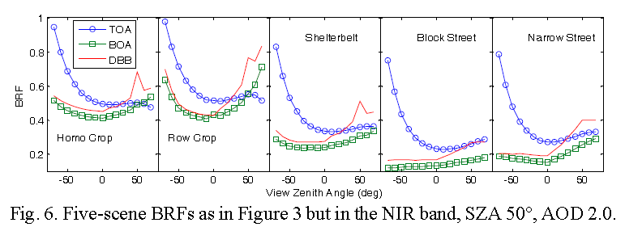

1.
, Qin, W., Spurr, R. J. D., & Liu, Q. (2017). Evaluation of Atmospheric Effects on Land-Surface Directional Reflectance with the Coupled RAPID and VLIDORT Models. IEEE Geoscience and Remote Sensing Letters, 14(6), 916–920. https://doi.org/10.1109/LGRS.2017.2687702

(2017). Field observations of background thermal radiation directionality in natural forests. Yaogan Xuebao/Journal of Remote Sensing, 21(3). https://doi.org/10.11834/jrs.20176097
, Chen, L., & Chen, E. (2017). Topographic correction method for steep mountain terrain images. Yaogan Xuebao/Journal of Remote Sensing, 21(5). https://doi.org/10.11834/jrs.20176384
1.Lin, Q.-N., Huang, H.-G.*, Chen, L., Yu, L.-F., & Huang, K. (2016). Simulation of needle reflectance spectrum and sensitivity analysis of biochemical parameters of pinus yunnanensis in different healthy status. Guang Pu Xue Yu Guang Pu Fen Xi/Spectroscopy and Spectral Analysis, 36(8). https://doi.org/10.3964/j.issn.1000-0593(2016)08-2538-08
2015
1.Xie, W.-J., Huang, K., Li, R.-P., Sun, H., Hu, J.-J., & Huang, H.-G.* (2015). Applying high-resolution satellite images to estimate tree diversity of mixed broadleaf-Korean pine forest. Beijing Linye Daxue Xuebao/Journal of Beijing Forestry University, 37(3), 20–26. https://doi.org/10.13332/j.1000-1522.20140306
2.Widlowski, J. L., Mio, C., Disney, M., Adams, J., Andredakis, I., Atzberger, C., ...,
Huang, H.,..., Zenone, T. (2015). The fourth phase of the radiative transfer model intercomparison (RAMI) exercise: Actual canopy scenarios and conformity testing. Remote Sensing of Environment, 169, 418–437. https://doi.org/10.1016/j.rse.2015.08.016
2014
1.Huang, H.* (2014). Study of the FOV effect in field multi-angular remote sensing based on an extended realistic structural model. Gaojishu Tongxin/Chinese High Technology Letters, 24(1). https://doi.org/10.3772/j.issn.1002-0470.2014.01.008
2.Zhan, H.-J., Xie, W.-J., Sun, H., &
Huang, H.-G.* (2014). Using ENVI-met to simulate 3D temperature distribution in vegetated scenes. Beijing Linye Daxue Xuebao/Journal of Beijing Forestry University, 36(4). https://doi.org/10.13332/j.cnki.jbfu.2014.04.014
2013
1.Huang, H.-G.* (2013). Progress analysis of LiDAR research on forestry science studies. Beijing Linye Daxue Xuebao/Journal of Beijing Forestry University, 35(4).
2.
Huang, H.*, & Wynne, R. H. (2013). Simulation of lidar waveforms with a time-dependent radiosity algorithm. Canadian Journal of Remote Sensing, 39(SUPPL.1). https://doi.org/10.5589/m13-035
3.
Huang, H.*, Qin, W., & Liu, Q. (2013). RAPID: A Radiosity Applicable to Porous IndiviDual Objects for directional reflectance over complex vegetated scenes. Remote Sensing of Environment, 132, 221–237. https://doi.org/10.1016/j.rse.2013.01.013
4.Widlowski, J. L., Pinty, B., Lopatka, M., Atzberger, C., Buzica, D., Chelle, M., ...,
Huang, H.,...,Xie, D. (2013). The fourth radiation transfer model intercomparison (RAMI-IV): Proficiency testing of canopy reflectance models with ISO-13528. Journal of Geophysical Research Atmospheres, 118(13), 6869–6890. https://doi.org/10.1002/jgrd.50497
1.Huang, H.*, Liu, Q., Liu, Q., & Qin, W. (2012). Validating theoretical simulations of thermal emission hot spot effects on maize canopies. International Journal of Remote Sensing, 33(3), 746–761. https://doi.org/10.1080/01431161.2011.577827
2.
Huang, H.-G.*, Dou, B.-C., & Hu, N. (2011). Tassel effect on the thermal emission directionality of corn canopies. Hongwai Yu Haomibo Xuebao/Journal of Infrared and Millimeter Waves, 30(2).
3.
Huang, H.*, Liu, Q., Qin, W., Du, Y., & Li, X. (2011). Temporal patterns of thermal emission directionality of crop canopies. Journal of Geophysical Research Atmospheres, 116(6). https://doi.org/10.1029/2010JD014613
4.
Huang, H.*, Liu, Q., Qin, W., & Qin, W. (2010). Thermal Emission Hot-Spot Effect of Crop Canopies—Part I: Simulation. IEEE Journal of Selected Topics in Applied Earth Observations and Remote Sensing, 3(3), 313–322. https://doi.org/10.1109/JSTARS.2010.2046625
5.
Huang, H.*, Chen, M., Liu, Q., Liu, Q., Zhang, Y., Zhao, L., & Qin, W. (2009). A Realistic Structure Model for Large-Scale Surface Leaving Radiance Simulation of Forest Canopy and Accuracy Assessment. International Journal of Remote Sensing, 30(20), 5421–5439. https://doi.org/10.1080/01431160903130911
6.Yan, L., Fang, L. Q.,
Huang, H. G., Zhang, L. Q., Feng, D., Zhao, W. J., … Cao, W. C. (2007). Landscape elements and Hantaan virus-related hemorrhagic fever with renal syndrome, People’s Republic of China. Emerging Infectious Diseases, 13(9), 1301–1306. https://doi.org/10.3201/eid1309.061481
7.Liu, Q.,
Huang, H., Qin, W., Fu, K., & Li, X. (2007). An extended 3-D radiosity-graphics combined model for studying thermal-emission directionality of crop canopy. IEEE Transactions on Geoscience and Remote Sensing, 45(9), 2900–2918. https://doi.org/10.1109/TGRS.2007.902272
8.
Huang, H.-G., Zhang, X.-L., & Wang, L. (2005). Simulation of forest fire spread based on a 3D-surface Cellular Automata Model. Beijing Linye Daxue Xuebao/Journal of Beijing Forestry University, 27(3).